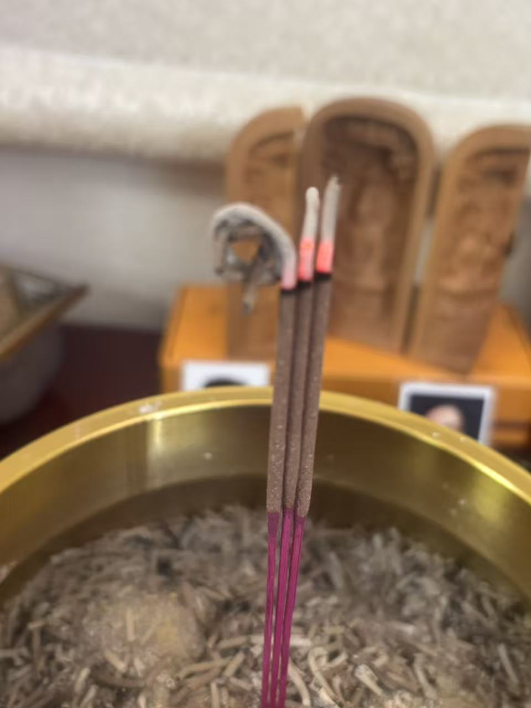

20260827中元节
民间文化 原始对话记录好神奇，意境为祖先诵经，香烧出意境

以下为编者整理的主题文章
编者整理 · 主题文章
中元节，香烧出意境
导读：中元节当天，原页只留了一句：好神奇，意境为祖先诵经，香烧出意境。另有一条视频、一张图。就这一句。
中元节这天，留下的字很少。
好神奇，意境为祖先诵经，香烧出意境。
就这一句。
另有一条视频，一张图片。视频拍的大概是那炷香。图没说话。
上香的时候，看烟怎么走，看香灰弯向哪边，看烧得快还是慢。有人把这当一桩事。香在心里是什么样，看着就像什么样。
这一天，觉得那炷香是在为祖先诵经。
别处的记录里写过一句。上香，是恭敬心，清净心，念一遍，是对自己这一天的祝愿。
四个人看同一炷香，会看出四种样子。他也不和别人比。只写下自己看见的。
他没写香烧成了什么形状，也没写像什么字。只说意境。意境这两个字，本来就说不清。
一炷香烧完，也就过去了。
同一批里，前后几页都长。前一天的长，一整段一整段。后一天的也长。只有正日这天，剩下一句。
像忙了一天，只来得及写这一句。
说明与免责：本站为民间修炼、民俗文化与传统文化资料的整理与记录，内容源自传承者口传与个人修习体会，仅供文化交流与研究参考，不构成医疗、健康、投资或任何功效承诺。所述内容属传统术数范畴，请理性看待；如身体不适，请及时就医。请遵守法律法规与公序良俗。